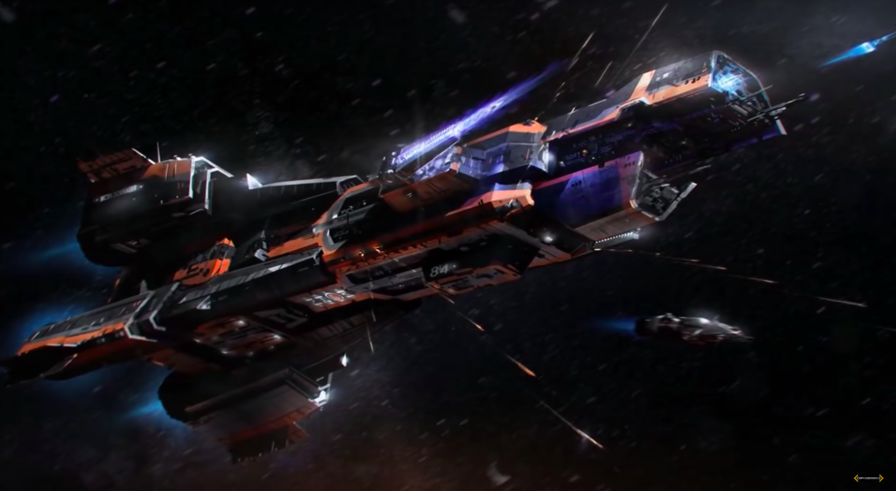
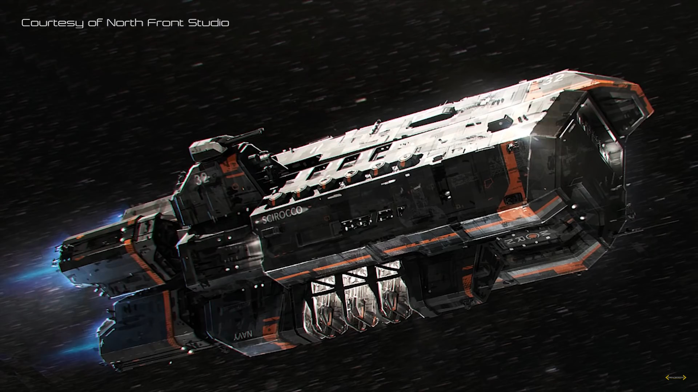
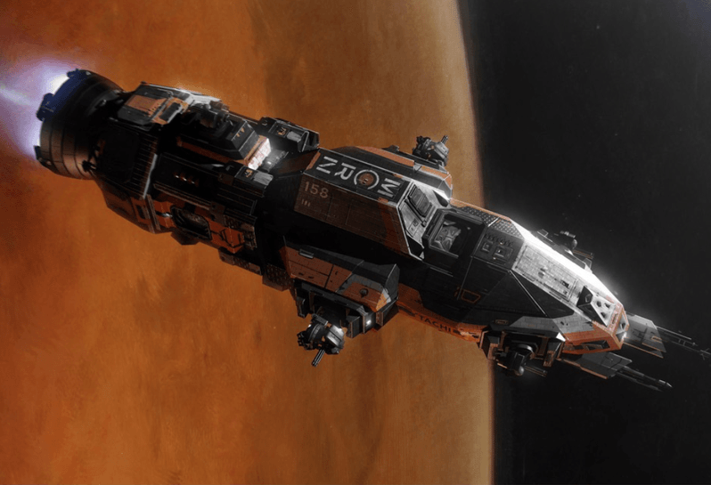
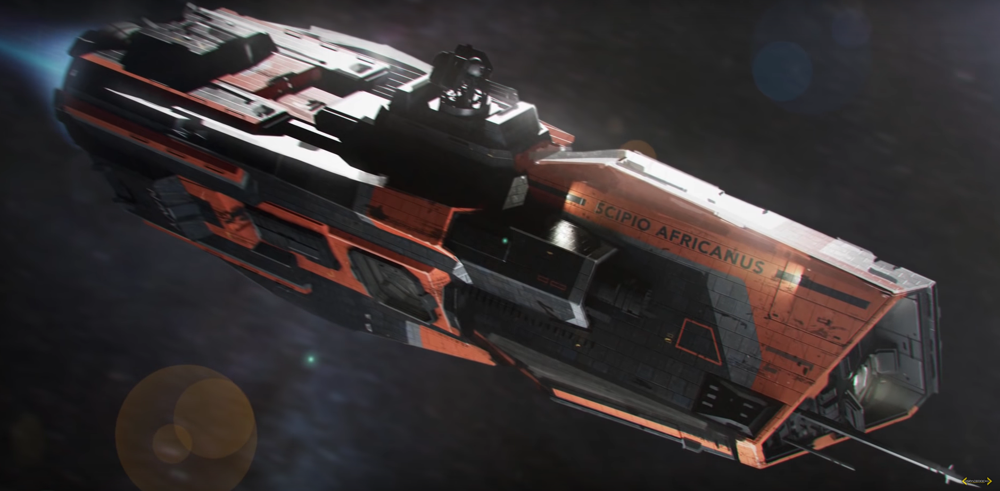

the Expanse |
|---|
| Nom | Bandol | Característiques | Noms coneguts |
|---|---|---|---|
|

Donnager-class |
Tipus de nau: Cuirasat Tonelatge: 250000 de tonelades metriques Longitud: 475.5metres Tripulació: 2086 Tropes: 550 de Martian Marine Corps Propulsió: 4RT-10 Kaminari |
MCRN Donnager MCRN Bellaire MCRN Hotspur MCRN Icara Planum MCRN Harman Dae-Jung MCRN Firebrand MCRN Barkeith MCRN Schiaparelli MCRN Carcassonne MCRN Armstrong MCRN Bellerophon (Nº de noms = 11) |
|
|

Scirocco-class |
Tipus de nau: Creuer d'asalt Tonelatge: de tonelades metriques Longitud: 200metres Tripulació: 430 Tropes: 120 de Martian Marine Corps Propulsió: 4RTF-B |
MCRN Scirocco MCRN Valkyrie MCRN Hammurabi MCRN Xuesen (Nº de noms = 4) |
|
|

Corvette-class |
Tipus de nau: Fragata lleugera Tonelatge: de tonelades metriques Longitud: 46metres Tripulació: 30 Tropes: 8 de Martian Marine Corps Propulsió: 1 |
MCRN Tachi MCRN McCabe MCRN Valenza MCRN Tsuchi MCRN Karakum MCRN Pella MCRN Connaught MCRN Shinakuto MCRN Koto MCRN Solano MCRN Panshin MCRN Serrio Mal MCRN Witch of Endor MCRN Ando MCRN Dagny Taggart (Nº de noms = 15) |
|
|

Morrigan-class |
Tipus de nau: Destructor de patrulla Tonelatge: de tonelades metriques Longitud: 31metres Tripulació: 8 Propulsió: 1RT6-B |
MCRN Ambedkar MCRN Avalanche MCRN Cú Chulainn MCRN Damascus MCRN Hamill-Stewart MCRN Iceni MCRN Kittur Chennamma MCRN Morrigan MCRN Scipio Africanus MCRN Shandian (Nº de noms = 10) |